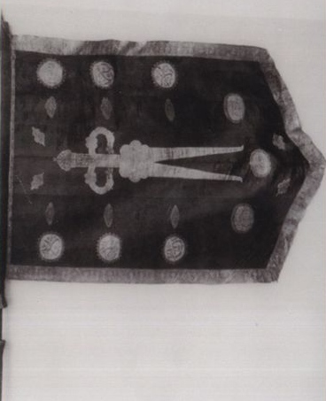
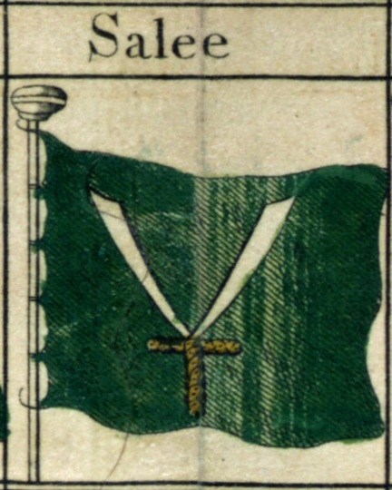
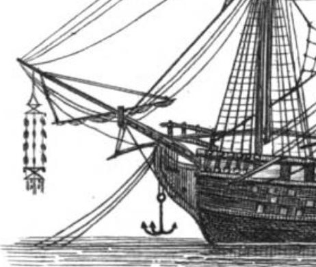
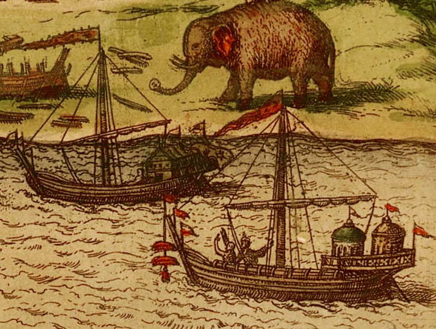
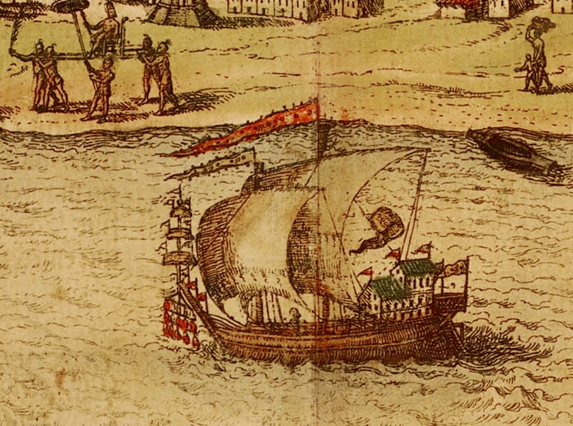
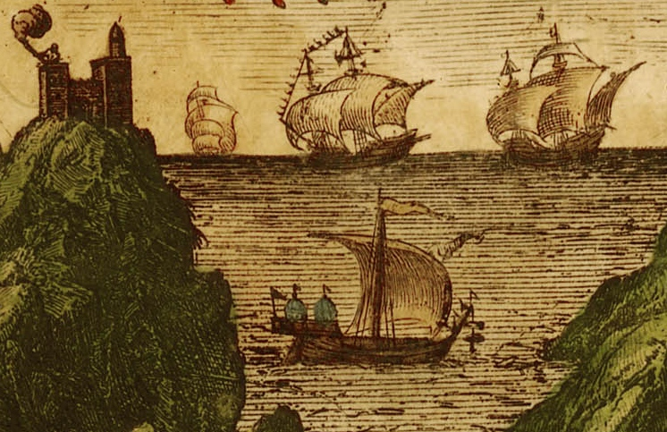

sasa, а также l_69_l, давшему близкий к правильному ответ (первый вариант).
sasa, а также l_69_l, давшему близкий к правильному ответ (первый вариант).История арабов действительно знает меч подобной формы. В доисламской Аравии такой меч принадлежал жителю Мекки Мунаббиху ибн Хаджжаджу. К Мухаммаду меч попал при разделе трофеев, захваченных мусульманами в битве с мекканскими противниками ислама при Бадре.
Не существует единого мнения относительно формы Зульфикара, чаще всего его изображают с двумя параллельными лезвиями или с одним лезвием, раздвоенным на конце. Конечно, это не боевое оружие, а символ, парадный образец. Символическое значение его подчеркивается достаточно частым появлением изображения такого меча на боевых знаменах и флагах мусульман. Иногда меч размещали на знамени в горизонтальном положении, как в нашем случае и на другом изображении

а иногда, как, например, на флаге пиратского государства Сале (находившегося близ нынешнего Рабата в Марокко) – в вертикальном положении

Это символ ислама расположен на флаге совсем так же, как символы христианства размещались на флагах кораблей европейских стран. Однако в носовой части нашего корабля с паломниками располагался еще один символ, или, быть может, талисман, который был (совсем уж на восточный манер) подвешен под бушпритом.

Такие талисманы были широко распространены на Востоке, многие исследователи прослеживают их чуть ли не до кораблей Соломона, ходивших в легендарную страну Офир за золотом и драгоценностями. Возможно, это образ «лестницы Якова», на который справедливо указал в своем комментарии
lazy_black_cat, и который именно так восприняли моряки английского шлюпа «Swift», но скорее лишь в восприятии европейцев. Вряд ли его так воспринимали мореплаватели Востока. Этот талисман принимал различные формы, и аналогия с «лестницей Якова» пропадает, стоит нам взглянуть еще на несколько изображений кораблей востока в порту Калькутты, например,

или в в порту Адена

взятые из атласа Брауна и Хогенберга.
Это, скорее всего, традиционные талисманы, «обереги» от дурного (дьявольского) глаза, корни которых уходят глубоко в историю Востока, нами пока еще очень мало изученную. Впрочем, незнание истории не помешает нам вернуться к этой теме еще раз, как только накопим (или накопаем?) интересный материал.
До следующего раза.